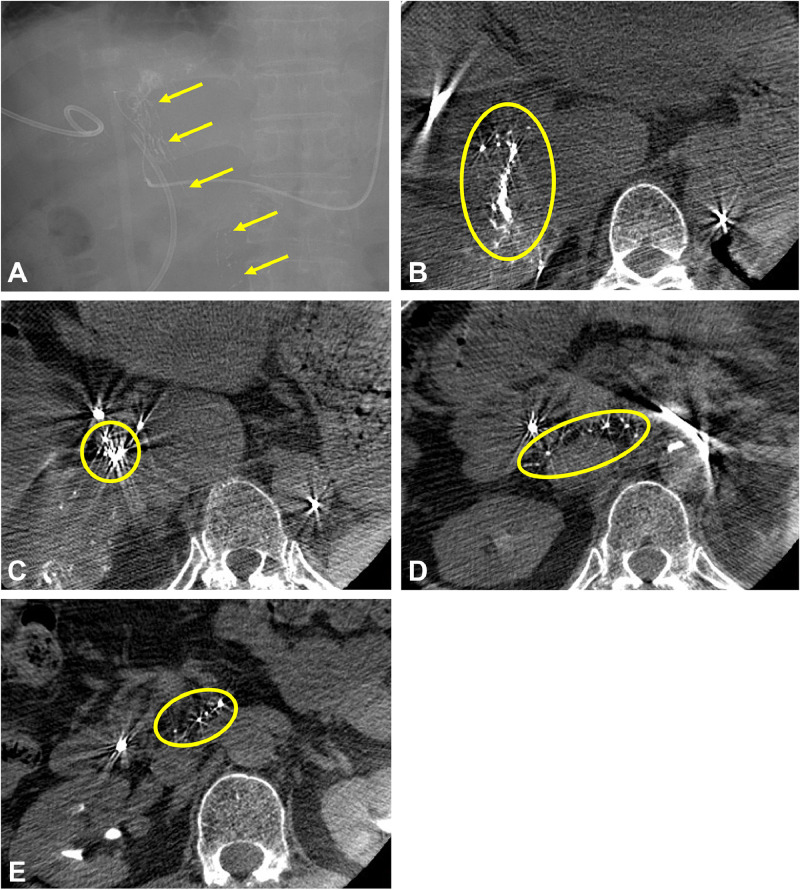

930 — Gan can thiệp: TACE, đốt & LR-TR / Liver IR
Tags: pattern:TACE-dot vung:gan score:LR-TR
Mức chắc chắn (certainty): tổng hợp y văn (literature synthesis) — nhóm tự biên từ y văn mở, chưa gắn ca nguyên văn đơn lẻ.
1. Tổng quan — gan 2 nguồn máu + nhiệt lan + viền đều là lành
- HCC ăn ĐM gan, nhu mô ăn TM cửa — TẠI SAO TACE chọn lọc diệt u giữ gan: nút ĐM + hóa chất vào u, gan còn cửa nuôi.
- Đốt (RFA/MWA): margin 5–10 mm + mạch > 3 mm gây heat-sink — TẠI SAO u sát mạch tái phát: máu làm nguội đầu đốt.
- Sau điều trị: viền xung huyết đều toàn chu vi = viêm lành; nốt dày không đều = u sống (LR-TR Viable); Lipiodol che ngấm — TẠI SAO CT sau cTACE khó đọc: Lipiodol đặc át thuốc.
2. Gamut HCC can thiệp (Gamut)
- HCC + Child-Pugh A + không mạch/lan xa: TACE chọn lọc — cầu nối mổ/ghép.
- U ≤ 3 cm + xa mạch: đốt RFA/MWA + margin — khỏi tương đương mổ nhỏ.
- Viền đều + Lipiodol đặc: viêm/Lipiodol — theo dõi (đừng TACE lại oan!).
- Nốt không đều + washout: Viable — TACE/đốt lại + toàn thân.
3. Bảng so sánh phân biệt (ma trận đối chiếu)
| Thực thể (entity) | Hình ảnh điển hình | Chốt vào (rule-in) | Chốt loại (rule-out) | Gợi ý xác nhận |
|---|---|---|---|---|
| Chỉ định TACE | HCC + gan còn bù + nuôi ĐM | Child A + không EPE | Suy gan/mạch → toàn thân | TACE chọn lọc + MRI |
| Chỉ định đốt | ≤ 3 cm + xa mạch > 3 mm + margin | Nhỏ + xa mạch | Sát mạch/lớn → TACE/mổ | RFA/MWA + margin 5–10 mm |
| Viêm/Lipiodol | Viền đều + Lipiodol đặc + không nốt | Đều + toàn chu vi | Nốt không đều → Viable | Theo dõi, đừng đốt lại |
| LR-TR Viable | Nốt dày không đều + APHE + washout | Nốt + động học HCC | Viền đều → viêm | TACE/đốt lại + toàn thân |

Opac bạch huyết rốn gan + hạch (không phải u!); ngừng bơm + theo dõi, TACE lại sau ổn. Nguồn: Mori et al., Radiol Case Rep 2026 Fig. 2, CC BY-NC-ND 4.0 (giữ nguyên bản).4. Protocol TACE/đốt + LR-TR flowchart
- DSA chọn lọc + cone-beam CT + margin + MRI động học sau 4–6 tuần (LR-TR v2024: Viable/Equivocal/Nonviable).
flowchart TD
A[HCC can thiệp] --> B{U ≤3cm + xa mạch?}
B -->|Có| C[Đốt + margin]
B -->|Không| D[TACE chọn lọc]
D --> E{MRI sau: nốt không đều?}
E -->|Có| F[Viable: làm lại]
E -->|Viền đều| G[Viêm: theo dõi]
5. Cạm bẫy
- Lipiodol lạc bạch huyết tưởng u lan (ca trên!) — chuỗi hạt rốn gan + hạch là ngừng bơm, không phải thất bại.
- U sát mạch > 3 mm đốt đơn tái phát — heat-sink là TACE/mổ kết hợp.
- Viền xung huyết TACE lại oan — đều toàn chu vi là viêm (nốt mới là Viable!).
6. Tự lượng giá — Blind Quiz
Ca 1 — TACE HCC S6 + opac lạ rốn gan. Đọc DSA + cone-beam.
- Hỏi: thuốc đi đâu? Ngừng hay bơm tiếp? Xử trí?
Bấm để hiện đáp án
- Dấu hiệu (findings): Lipiodol vào bạch huyết rốn gan + hạch (chuỗi hạt), không vào u.
- Chẩn đoán (diagnosis): thông động-bạch huyết (xơ gan + viêm đường mật) — ngừng bơm + theo dõi (TACE lại 6 tháng sau ổn, không biến chứng!).
- Nguồn: Mori et al., Fig. 2, CC BY-NC-ND 4.0 (nguyên bản).
Ca 2 — Sau đốt + viền đều toàn chu vi, không nốt: Viable hay viêm? (Bảng mục 3.)
Bấm để hiện đáp án
- Viêm xung huyết: theo dõi (nốt dày không đều mới là Viable!).
Bài liên quan chéo
- 901 – Tổng quan IR
- 920 – Nút mạch (kỹ thuật nút)
- 121 – LI-RADS (HCC + LR-TR)
Không dùng để chẩn đoán độc lập khi chưa có người hướng dẫn.